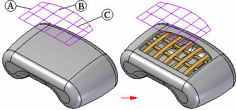
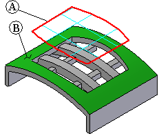
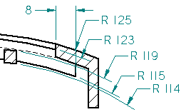
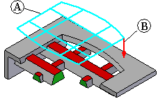

Vent command
Vent command
Constructs a vent. You construct a vent feature by selecting elements from a single, existing sketch. The sketch defines the exterior boundary element (A), ribs (B), and spars (C) for the vent feature. The exterior boundary must be a closed element and cannot pass through any surfaces on the design model. The ribs and spars can be open or closed elements.

You can use the Vent Options dialog box to define rib and spar properties, such as thickness, depth, draft and rounding properties. You can also specify whether the ribs or spars extend past the opening created by the boundary element, and whether the ribs or spars are offset from the entrance surface.
You must have both a solid body and a sketch in a Part document before you can construct a vent feature.
Vent construction details
The top and bottom surfaces on the ribs and spars are constructed by offsetting the first surface (entrance surface) that the boundary element cuts. For example, the boundary element (A) for the vent shown cuts through a cylindrical surface (B) with a radius value of 125 millimeters. The top and bottom faces of the ribs and spars will then also be cylindrical.

The cylindrical radius value of the top and bottom faces of the ribs and spars is determined by the values you enter in the Vent Options dialog box for the rib and spar properties for Offset and Depth.
|
Property |
Rib |
Spar |
|---|---|---|
|
Thickness |
8 mm |
5 mm |
|
Extension |
8 mm |
3 mm |
|
Offset |
2 mm |
6 mm |
|
Depth |
8 mm |
5 mm |
For example, the top face of the rib has a radius value of 123 millimeters because an offset value of 2 millimeters was specified for the top face of the rib. The radius value of the bottom face of the rib is determined by the values for the Offset and Depth property. In this example, the bottom face of the rib has a radius value of 115 millimeters (125 - (8+2)). Similar results are shown for the top and bottom faces on the spar (119 mm and 114 mm). Also notice the rib extension value of 8 mm.

Draft angle for a vent feature is defined relative to the sketch and extent direction for the feature. For the following vent feature, the sketch (A) is positioned above the part, and the extent (B) is defined downward toward the part. The red faces on the ribs and spars are then considered outside faces, and the draft direction was defined as outward, which adds material.

How do I
Construct a vent featureLearn more
Vent featuresLook up more details
Vent command barVent Options Dialog Box
What can go wrong-vent features